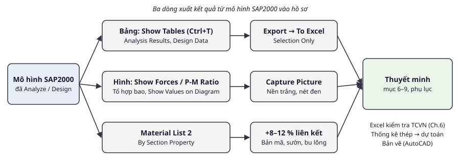

Bài 17.2. Xuất kết quả, thống kê thép Exporting results and steel take-off
Bảng và hình trong thuyết minh, cũng như khối lượng thép cho dự toán, đều lấy trực tiếp từ mô hình SAP2000. Bài này hệ thống các thao tác xuất kết quả.
- Xuất bảng (sang Excel), hình và báo cáo từ SAP2000.
- Thống kê khối lượng thép và đánh giá theo chỉ tiêu kg/m².
1. Tình huống
Mô hình nhà xưởng Hòa Bình (50 × 72 m, 3600 m²) đã chạy xong. Kỹ sư cần: bảng nội lực cột để kiểm tra TCVN trong Excel, biểu đồ mô men bao nền trắng cho thuyết minh, phản lực chân cột cho thiết kế móng, và khối lượng thép cho dự toán.
2. Nội dung chính

Thống kê khối lượng thép
Display → Show Tables → Model Definition → Other Definitions → Material List (bảng Material List 2 – By Section Property): tổng trọng lượng theo tiết diện. Lưu ý:
- Khối lượng này là khối lượng phần tử thanh, chưa có bản mã, sườn, bu lông. Thông thường cộng thêm 8–12 % cho nhà khung tiền chế.
- Phần tử tiết diện thay đổi được SAP2000 tính đúng theo chiều dài.
- Giằng, thanh chống có thể không được mô hình đầy đủ. Bổ sung theo bản vẽ.
Chỉ tiêu tham khảo cho nhà khung tiền chế nhịp 30–50 m, không cầu trục: 25–40 kg/m² sàn cho khung chính, chưa kể xà gồ. Dùng để tự kiểm tra mức độ hợp lý của thiết kế.
3. Thực hành SAP2000
Xuất kết quả từ SAP2000
Bảng
Display → Show Tables (Ctrl+T), chọn:
- Model Definition: Frame Section Properties, Load Pattern Definitions, Combination Definitions.
- Analysis Results: Joint Reactions, Joint Displacements, Element Forces – Frames, Modal Periods.
- Design Data: Steel Design 1 – Summary Data – AISC 360-10 (nhánh Mỹ).
Trong cửa sổ bảng: File → Export Current Table → To Excel. Dùng Options → Selection Only để chỉ xuất các phần tử đã chọn (ví dụ nhóm COT). Với nhánh TCVN, bảng Element Forces – Frames là đầu vào của các bảng tính Excel ở Chương 6. Video Buổi 15 xuất Joint Reactions sang Excel để lọc phản lực chân cột (Chương 15).
Hình
- Display → Show Forces/Stresses → Frames: chọn tổ hợp bao, M3, Show Values on Diagram.
- Design → Steel Frame Design → Display Design Info → P-M Ratio Colors & Values.
- File → Capture Picture → Entire Window hoặc File → Print Graphics. Đặt nền trắng: Options → Colors → Display → White Background, Black Objects (Ctrl+Shift+W hoặc trong Display Options).
Báo cáo tự động
File → Create Report: chọn mục, xuất ra Word. Tiện cho phụ lục nhưng dài. Phần chính của thuyết minh nên tự trình bày.
4. Lỗi thường gặp
- Lấy khối lượng Material List làm khối lượng dự toán mà không cộng 8–12 % bản mã, sườn, bu lông.
- Chụp hình nền đen mặc định đưa vào thuyết minh: in ra khó đọc; đặt White Background, Black Objects trước khi chụp.
5. Luyện tập
Bảng nào của SAP2000 cho tổng trọng lượng thép theo từng tiết diện?
Gợi ý
Model Definition → Other Definitions.
Lời giải
Material List 2 – By Section Property cho trọng lượng theo tiết diện (chỉ phần tử thanh).
Khối lượng khung chính (chưa kể xà gồ) của nhà 50 × 72 m là 108 tấn. Tính chỉ tiêu kg/m² sàn.
Gợi ý
Diện tích $50 \times 72 = 3600$ m².
Lời giải
$108\,000/3600 = 30$ kg/m², nằm trong khoảng tham khảo 25–40 kg/m².
Material List của nhà 50 × 72 m cho khối lượng khung chính 95 tấn. Cộng 10 % cho liên kết rồi tính chỉ tiêu kg/m² sàn.
Gợi ý
Khối lượng sau khi cộng: $95 \times 1{,}10$.
Lời giải
$95 \times 1{,}10 = 104{,}5$ t; $104\,500/3600 = 29{,}0$ kg/m² → hợp lý (25–40 kg/m²).
- Bảng: Show Tables (Ctrl+T) → Export Current Table → To Excel; Selection Only để lọc nhóm.
- Hình: Show Forces/Stresses, P-M Ratio Colors; nền trắng trước khi Capture Picture.
- Khối lượng Material List là phần tử thanh: cộng 8–12 %; chỉ tiêu khung chính 25–40 kg/m².